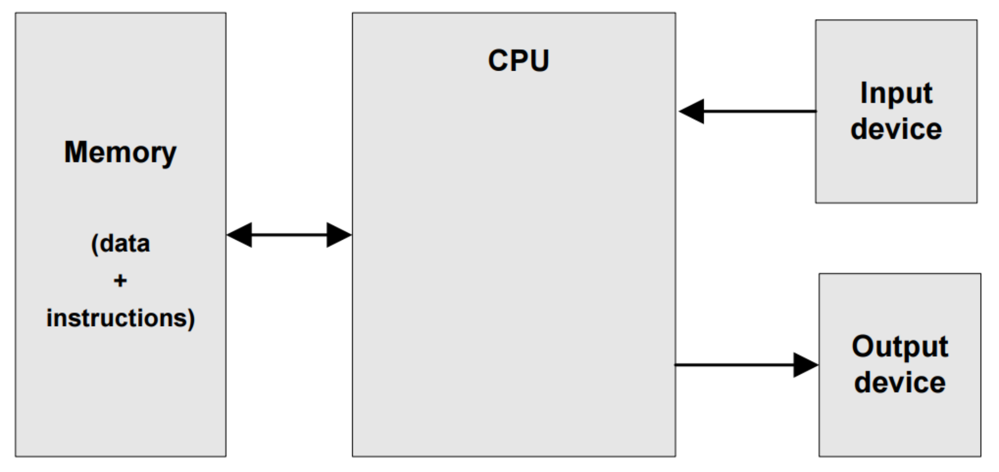
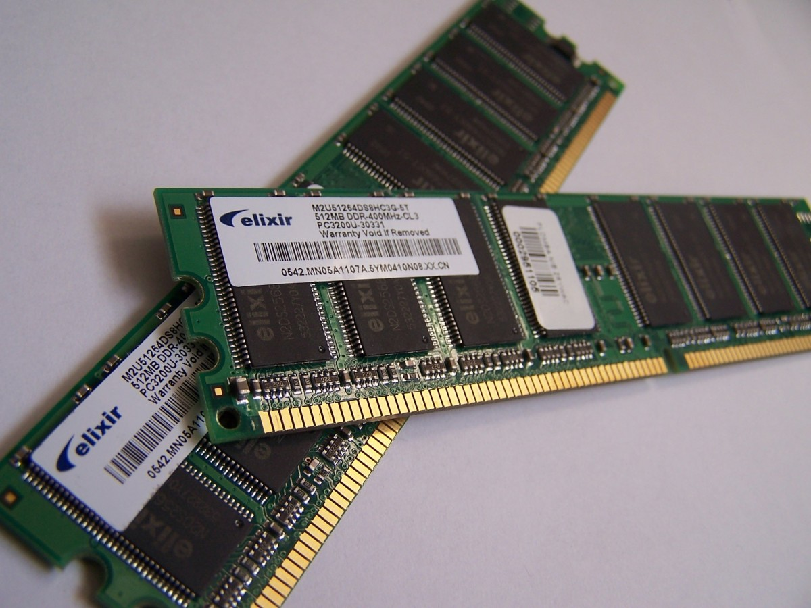
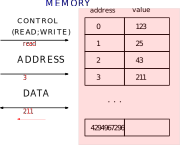
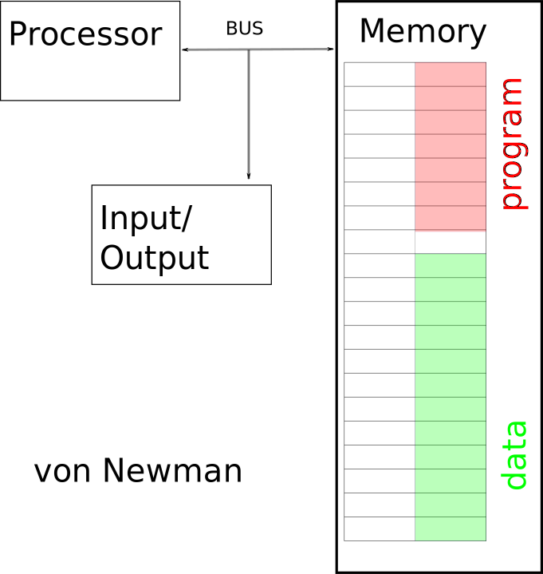
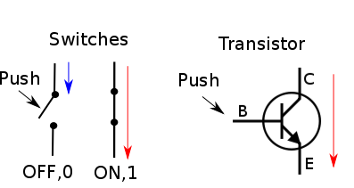
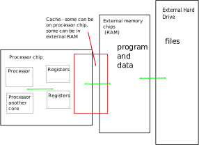

Today we talk about what will covered in this course.
We will cover the basics of how computers work, including:
What is computer anyway? (Very high-level picture).
How computer hardware works. What are limitations?
How data is encoded and stored in computers.
How software works, at several levels.
Computer Parts.
At very high level, a computer is made of several parts:
Central Processing Unit (CPU) - does the calculations and logic.
Memory (RAM) / Storage (HDD) - stores data and instructions for the CPU.
Input/Output Devices - allow interaction with the computer (keyboard, mouse, display).
These parts are connected via a system bus that allows data transfer between them.
Here is a simple diagram of computer architecture:

Basic Computer Architecture.
Underlying principles are rather simple, but the implementation is complex.
It is all digital, so there is nothing but numbers inside.
CPU
Glorified calculator. Takes numbers and adds, subtracts, divides and does what not
with these numbers.
CPU .
Memory
Stores numbers. Very fast to read and write, but volatile (loses data when power is off).

RAM .
We will talk more about memory later. For now, we just mention that memory is made of
millions of tiny cells that can store either 0 or 1 (bits). Each cell has an address, so
that CPU can read or write data to specific cells.

Memory Cells with addresses .
Input-Output.
Devices that allow user to interact with computer and computer
to interact with the outside world, including other computers.
Input-Output Devices .
Busses.
Bus is a communication system that transfers data between components inside a computer,
or between computers. It is bunch of wires that connect different parts of the computer
and set of rules to specify how data is transmitted.
SATA Bus - exchange between CPU and storage .
Architecture.
So far we talked about parts of the computer.
Now we talk about how these parts work together.
Attempts to design a computer architecture date back to 1940s. But designs suffered from
severe limitations until 1945. It was possible to build a computer that could
calculate only one function. Changing the function required rewiring the machine, like
ENIAC machine shown below.
ENIAC - early computer that required rewiring to change function.
In 1945, John Von Neumann proposed a new architecture that allowed computers to be
programmed by storing instructions in memory, along with data. This architecture
is known as Von Neumann architecture, and it is still used in most computers today.

Von Neumann Architecture.
Such architecture allows the computer to be reprogrammed by simply changing the
instructions stored in memory, without the need for rewiring.
Lowest-Level Hardware.
At the lowest level, computer hardware is made of electronic components
like transistors, capacitors, resistors, etc.
In the beginning of computer era these component were used to store and process data
as decimal numbers (0-9). However, it was found that using binary numbers (0 and 1)
is more reliable and efficient for electronic circuits. Therefore, modern computers
use binary representation for data storage and processing.
What is binary representation and why is it important?
Binary representation is a way of representing data using only two symbols: 0 and 1.
This is important because electronic circuits can easily distinguish between two states,
such as on/off, high/low voltage, etc. This makes binary representation more reliable
for data storage and processing in computers. We will talk more about binary
representation later in this course.
Computer hardware uses only two voltage levels to represent binary digits (bits):
low voltage (0) and high voltage (1).
It is the foundation of digital electronics.
And good part is that you need very simple components to build such circuits.
Actually, you can build a simple digital circuit using just switches.
These are mechanical switches, but they illustrate the idea.

Simple digital circuit using switches.
These switches are called transistors in real electronic circuits. One transistor can
act as a switch that can be either on or off, representing a binary digit (bit). It
can control the state of other transistors, allowing for complex logic operations to be performed.
How many of these switches are needed to build a computer?
Quite a lot. Modern computers have billions of transistors.
For example, a modern CPU can have over 10 billion transistors.
How fast these transistors can switch?
Very fast. Modern transistors can switch in nanoseconds (billionths of a second).
This allows computers to perform billions of operations per second.
How big are transistors?
Very small. Modern transistors are measured in nanometers (billionths of a meter).
This allows for billions of transistors to be packed into a small area, such as a CPU chip.
What are limitations?
There are several limitations to using von Newman architecture:
Von Neumann Bottleneck: The speed of data transfer between CPU and memory is limited
by the bus width and clock speed. This can lead to performance issues when the CPU
needs to access data from memory frequently.
Memory Latency: Accessing data from memory can be slow compared to the speed of
the CPU. This can lead to delays in processing when the CPU needs to wait for data
to be fetched from memory.
Power Consumption: The constant data transfer between CPU and memory can lead to
high power consumption, which can be a concern for mobile devices and laptops.
These limitations have led to the development of alternative architectures, such as
Harvard architecture, which separates the memory for instructions and data, allowing
for faster data access and processing.
So problem memory speed. We can make very fast memory, but it is expensive.
We can make slow memory, but it is cheap. So we have to balance speed and cost
when designing computer systems.
Problem with memory latency is often mitigated by using cache memory, which is a small amount
of fast memory located close to the CPU. Cache memory stores frequently accessed data,
allowing the CPU to access it quickly without having to wait for data to be fetched from
main memory.

Cache Memory .
As a programmer you should be aware of these limitations and design your software
accordingly. For example, you should try to minimize the number of memory accesses
in your code, and use data structures that are cache-friendly.
Course Structure.
This course is structured into several modules.
We will discuss:
how numbers are represented in computers.
How data (sound,image) is encoded (converted into numbers)
and stored in memory
what are basic rules for binary numbers and logic operations.
how CPU, memory and other components are build using these principles.
how CPU works and what instructions it executes.
how hard it is for programmer to write these machine instructions.
(We will try anyway).
how higher-level programming languages work and how they are translated
into machine instructions.
we will program in a higher-level language and see how it translates to machine instructions.
Language will be C, which is known for its efficiency and close-to-hardware capabilities.
It also known for how easy it makes to shoot yourself in the foot. We
hope that it will help to develop good programming habits.